Combat Skills
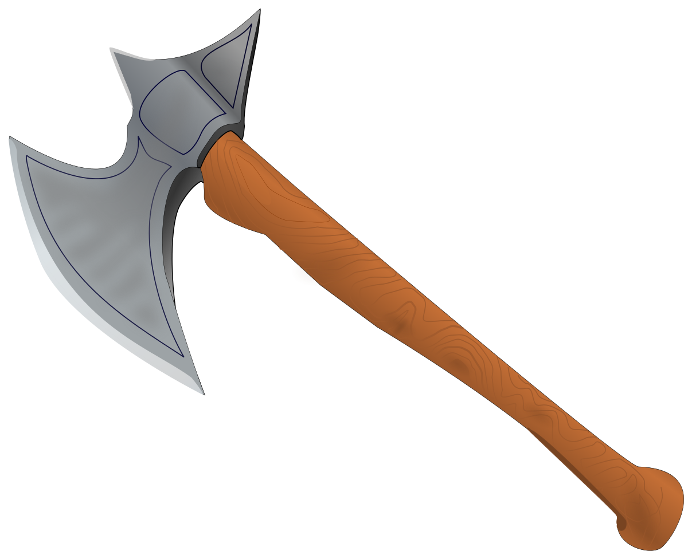
Axe
The axe skill is used to determine the proficiency of an individuals use of a handaxe. Handaxes can be wielded with two hands or used with with theSHIELDS
skill.Primary attributes for the axe skill, listed in order of importance are:
STRENGTH,
DEXTERITY,
andAGILITY.
Bludgeon
The bludgeon skill is used to determine the proficiency of an individuals use of a mace. Maces can be wielded with two hands or used with with theSHIELDS
skill.Primary attributes for the bludgeon skill, listed in order of importance are:
STRENGTH,
DEXTERITY,
andAGILITY.
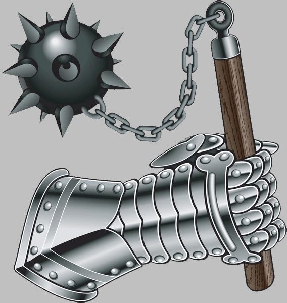
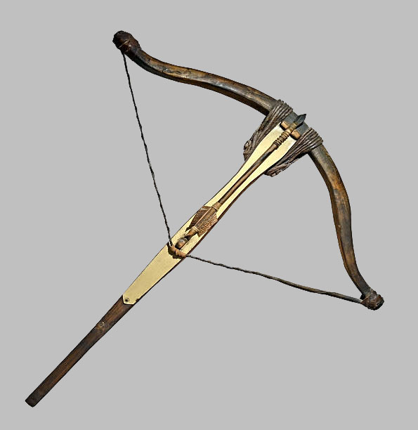
Crossbow
The crossbow skill is used to determine the proficiency of an individual's use of a crossbow. Crossbows have the damage of a longbow, and the accuracy of a shortbow. However, the reload time for an arrow is much longer.Primary attributes for the crossbow skill, listed in order of importance are:
DEXTERITY
andAGILITY.
Heavy Axe
The heavy-axe skill is used to determine the proficiency of an individuals use of a battleaxe. Battleaxes are wielded with two hands and utilize thePARRY
skill.Primary attributes for the heavy axe skill, listed in order of importance are:
STRENGTH,
DEXTERITY,
andAGILITY.
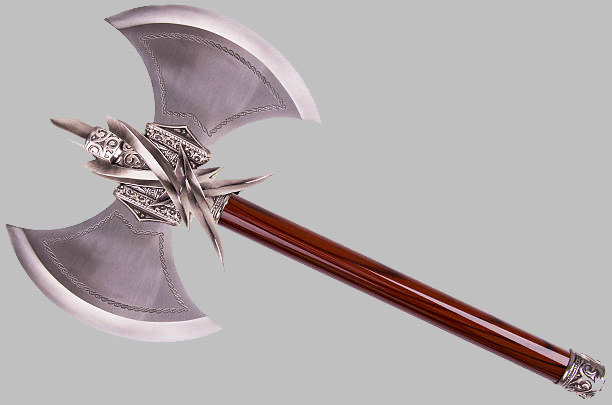
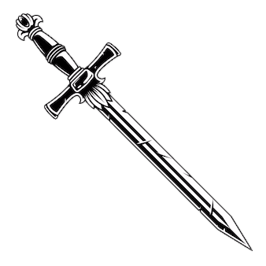
Heavy Blade
The heavy-blade skill is used to determine the proficiency of an individuals use of a greatsword. Greatswords are wielded with both hands and make use of thePARRY
skill.Primary attributes for the heavy blade skill, listed in order of importance are:
STRENGTH,
DEXTERITY,
andAGILITY.
Heavy Bludgeon
The heavy bludgeon skill is used to determine the proficiency of an individual's use of a warhammer. Warhammers are wielded with two hands and utilize thePARRY
skill.Primary attributes for the heavy bludgeon skill, listed in order of importance are:
STRENGTH,
DEXTERITY,
andAGILITY.
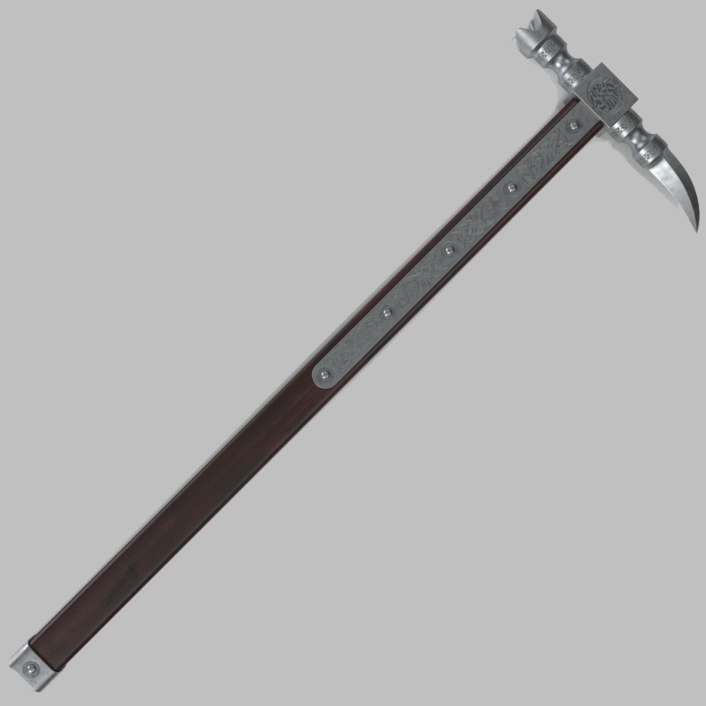
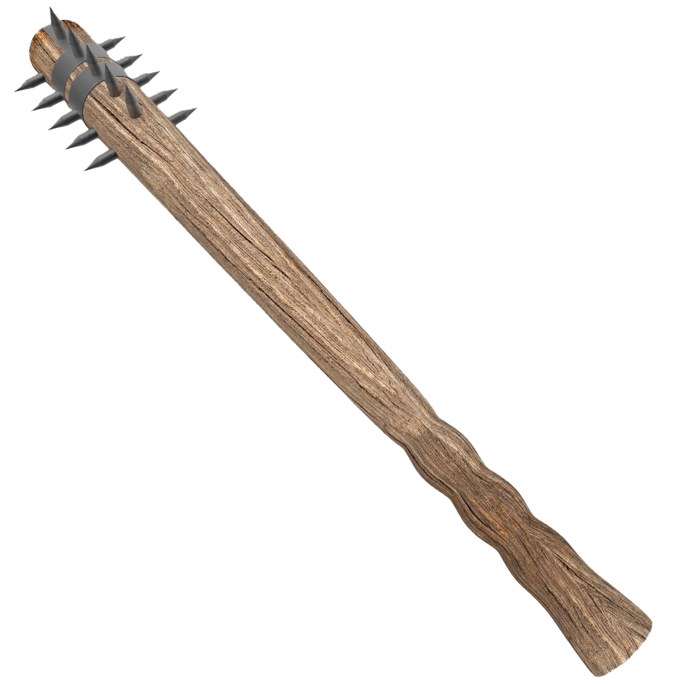
Light Bludgeon
The light-bludgeon skill is used to determine the proficiency of an individuals use of a small club. Small clubs can be wielded with two hands or used with theSHIELDS
skillPrimary attributes for the long-blade skill, listed in order of importance are:
AGILITY, DEXTERITY,
andSTRENGTH.
Long Blade
The long blade skill is used to determine the proficiency of an individuals use of a longsword. Longswords can be wielded with two hands or used with theSHIELDS
skill.Primary attributes for the long blade skill, listed in order of importance are:
STRENGTH, DEXTERITY,
andAGILITY.

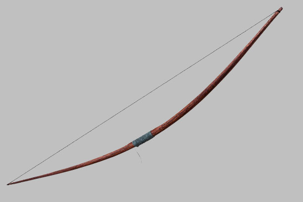
Longbow
The longbow skill is used to determine the proficiency of an individuals use of a longbow. Longbows do more damage, but are less accurate than shortbows.Primary attributes for the longbow skill, listed in order of importance are:
DEXTERITY, AGILITY,
andSTRENGTH.
Long Spear
The long-spear skill is used to determine the proficiency of an individuals use of a long spear. Long spears are wielded with two hands and utilize thePARRY
skill.Primary attributes for the long spear skill, listed in order of importance are:
STRENGTH, DEXTERITY,
andAGILITY.
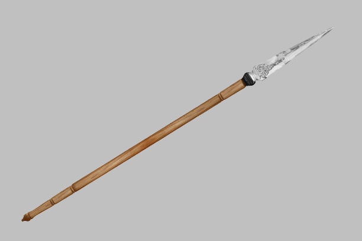
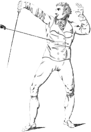
Parry
The parry skill is used to determine an individual's ability to defend themselves by parrying blows made against them. Weapons that typically would use the parry skill include dual-wielded daggers or clubs, heavy weapons, or weapons used without shields.Primary attributes for the parry skill, listed in order of importance are:
Agility, Dexterity,
andStrength.
Shield
The shield skill is used to determine an individual's ability to use a shield in their own defense. Weapons that can be used with a shield are either small or medium sized weapons. If a user has super strength or greater they might be able to use a shield with a heavy weapon.Primary attributes for shields, listed in order of importance are:
STRENGTH, DEXTERITY,
andAGILITY.
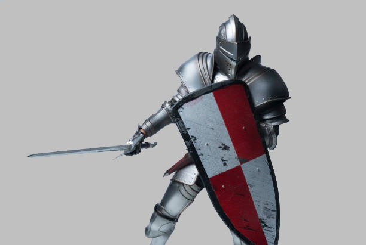
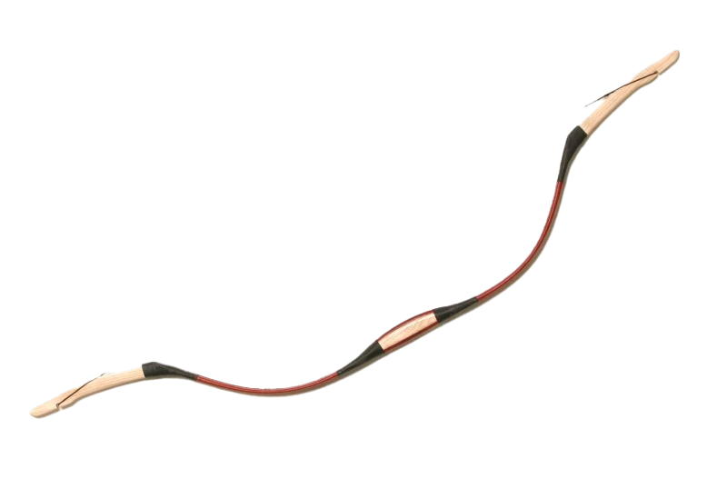
Shortbow
The shortbow skill is used to determine the proficiency of an individuals use of a shortbow. Shortbows are more accurate but do less damage than longbows.Primary attributes for the shortbow skill, listed in order of importance are:
DEXTERITY, AGILITY,
andSTRENGTH.
Short Blade
The short-blade skill is used to determine the proficiency of an individuals use of a shortsword. Shortswords can be wielded with two hands or used with theSHIELDS
skill.Primary attributes for the short blade skill, listed in order of importance are:
AGILITY, DEXTERITY,
andSTRENGTH.
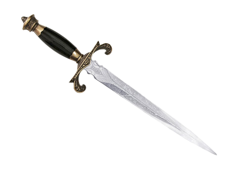
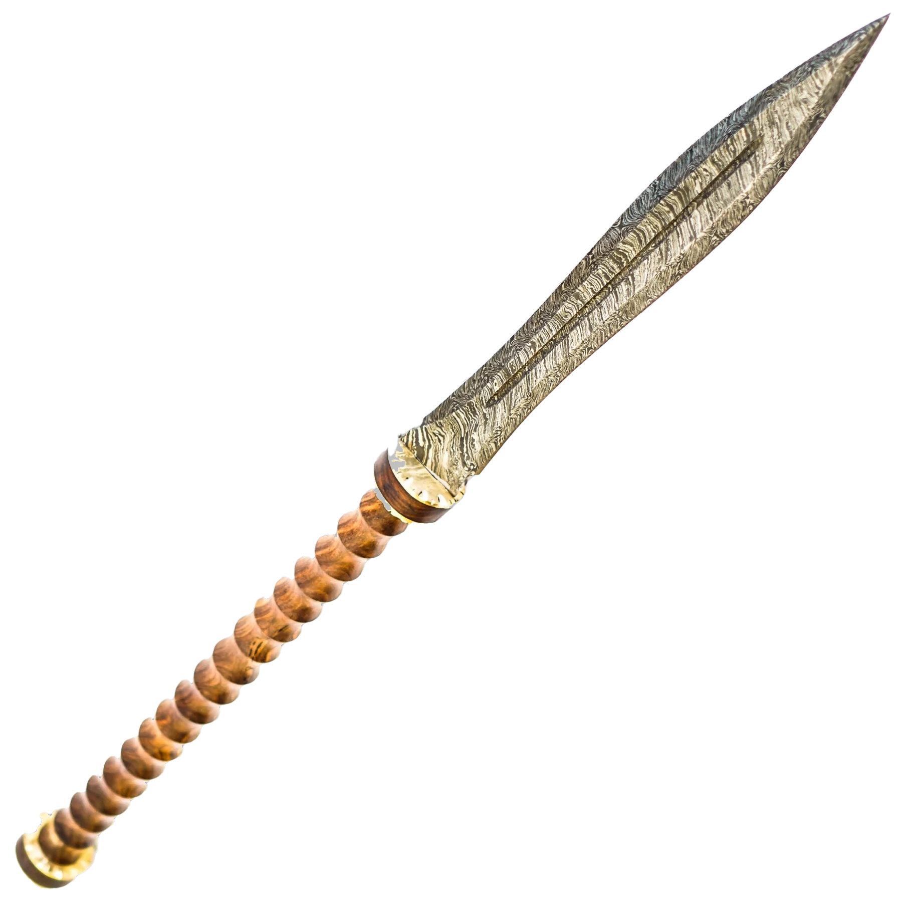
Short Spear
The short spear skill is used to determine the proficiency of an individuals use of a short spear. Short spears can be wielded with two hands or used with with theSHIELDS
skill.Primary attributes for the short spear skill, listed in order of importance are:
AGILITY, DEXTERITY,
andSTRENGTH.